You Need Herbs... But Why Herbs?
If you want to lose weight, read this first:
Have you ever caught yourself saying, "No, not tonight. I just want to sleep."
Back in college you used to stay up all night, so what happened? Does this just happen to everyone as we get older? Is it just unavoidable like paying tolls?
You might eat as "healthy" as possible, but still feel like you're missing something. But what could it be?
Not another energy drink, please!
You already know to eat organic and non-gmo food... but the truth is there are 3 other things you need to be aware of (without knowing this, you're being robbed of your energy):

Non-Hybrid |
Wild-Crafted |
Fresh |
1. Non-Hybrid
What's a hybrid? It's the offspring of two plants from different species or varieties. This is accomplished through a technique called: Grafting
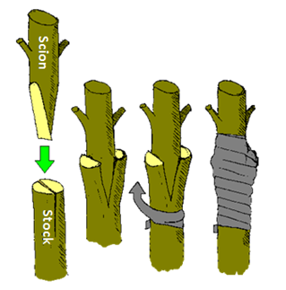
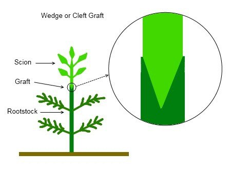
To be frank, all food today is a hybrid version of its original. But the degree to which it is hybrid determines if it's good for us or not. Think of it like this, if you made a photocopy of a photocopy of another photocopy... it would eventually begin to fade the further away from the original it got, right? A hybrid between different varieties that naturally occurred thousands of years ago is perfectly fine. A man-made hybrid between different species in the last few hundred years, such as a carrot, is not required in the human diet and may even cause allergic reactions in some people without realizing the cause. Yes that's right... an orange carrot is actually a cross between a yellow yarrow and purple wild yam.
This experiment was performed in the 16th century in Holland to celebrate William I, Prince of Orange. (ref.)
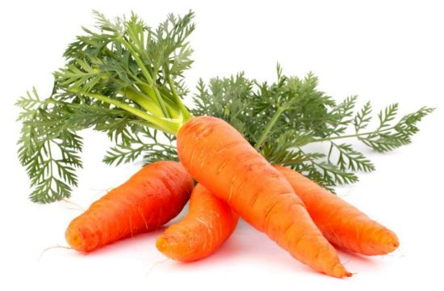
You can't make this stuff up.
Modern wheat would be another perfect example of a hybrid species, while Einkorn would be a good example of a hybrid variety. People that cannot digest gluten, may have no trouble with bread made from einkorn.
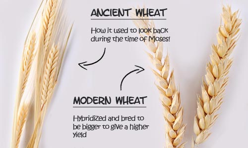
Also, most of these hybrid species often times produce a sterile seed. If it wasn't for the deliberate intervention of man, they would eventually die out.
Just about all the food in our groceries stores are hybrid species. It's actually easier to create a list of healthy non-hybrid (hybrid variety) food, than it is hybrid (species) food. (click here for list)
In modern times, it has gone even further by splicing life not even in the same kingdom... like the Atlantic salmon's DNA being mixed with a tomato plant so it may endure during freezing winters. This is known as GMO (genetically modified organisms). This does an amazing job at increasing yield and profit, but what about our health? Hmm...
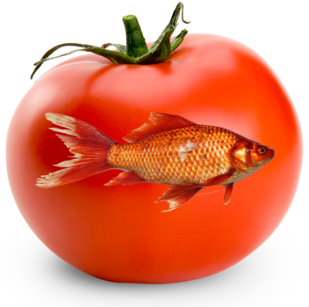
2. Wild-Crafted
Did you know there are 90 naturally occurring elements on the periodic table? And all of them may be absorbed by the human body to maintain a balanced health.

But how do we get all of these minerals in us? If we tried to eat iron, for example, we couldn't. That's because it's still in its oxide (solid) state. But when small particles of iron are naturally found in the soil (i.e. rock dust), and micro-organisms in the soil digest them, and then a plant digests that from the soil, then the plant now has a bio-available (liquid) form of iron (iron fluorine) for us to absorb.
But now what if the soil didn't contain the mineral in the first place. Would the plant still be able to provide us with the nutrients? Of course not. The plant can't create the minerals out of nowhere. So now we can begin to understand how our food is only as healthy as the soil it grows in. This is why the label "wild-crafted" is so much more important the label "organic." Especially when modern conventional farmers only put back in the soil the bare minimum, 3 minerals. After constantly harvesting crops and tilling the soil so it's loose enough for rain and wind to wash away the micro-organisms and minerals, this quickly becomes a huge problem that's completely ignored.
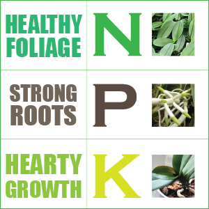
It's now just about impossible to follow Hippocrates' advice:
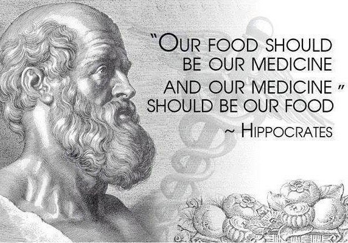
And we wonder why disease and illness has been on a steady rise.
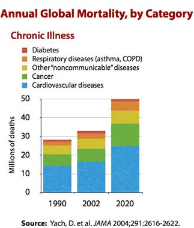
3. Fresh
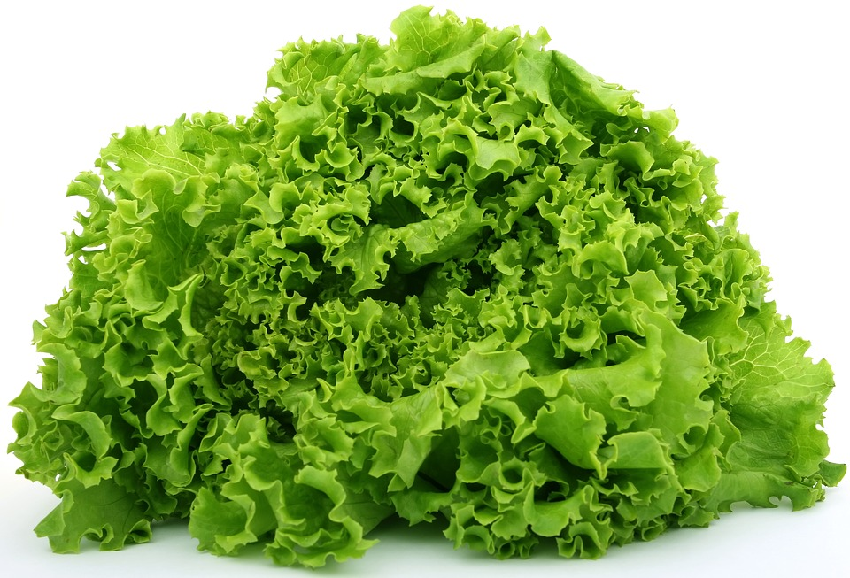
Quick... how long does lettuce last in your fridge when you bring it home? 3 days? 5 days? 7 days at most?
The leaves of a plant are the quickest to lose it's energy and go bad. The fruit of a plant is the second quickest (unless you freeze or dehydrate it). Algae, like spirulina... forget about it, that loses its energy within seconds of being removed from the water.
However, did you know the roots, branches and bark of a plant do not go bad for many, many years after being harvested. The same goes for seeds, until they are cracked open and begin to oxidize. These parts don't contain nearly as much water as the leaves and fruit do, that's why they do so well at storing. If you ate a leaf, as soon as it was picked from the ground, you would actually feel the difference in energy. But with seeds, roots, branches and bark, you can still feel that same boost of energy long after it was harvested. These are some of the most powerful parts of a plant that usually get forgotten about in today's modern world. These are the real herbs.. real vegetables..
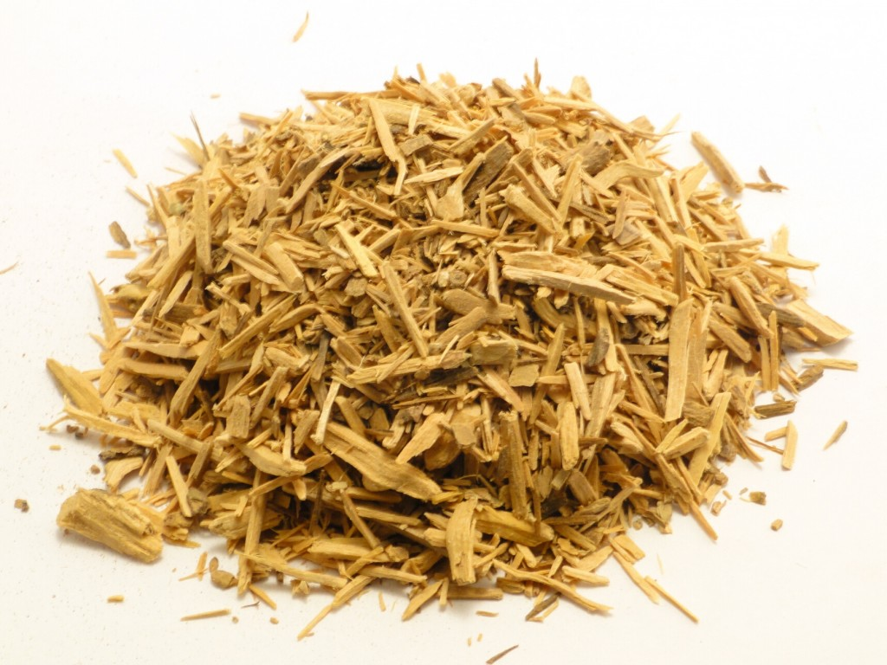
Roots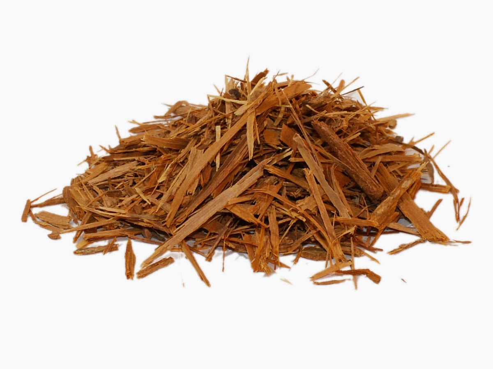
BarkNow think about this: all apples sold in your average grocery store in America are at least 1 year old. (ref.) So how much nutrition / energy are you really getting?
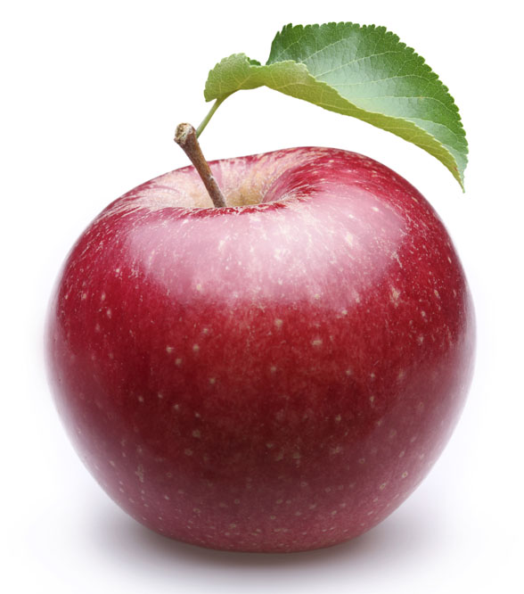
The added bonus with herbs, is that they provide you with a 2-step healing process.
|
Step 1: Empty the body of the bad |
Step 2: Fill the body with the good. |
The "bad" is all the harmful food that we eat (including any toxins we're exposed to in our environments or excess minerals we struggle absorbing), which breaks down our protective mucous membrane that is suppose to keep the dirty mucous from getting into parts of the body it doesn't belong. (i.e. mucous in the lungs = pneumonia, mucous in the nasal passage = sinusitis, mucous in the eyes = glaucoma, mucous in the brain = Alzheimer, mucous in the blood, skin, and lymphatic system (encompassing the immune system) = leukemia, lupus, AIDS, etc.)
The "good" is all the naturally-occurring minerals (elements on the periodic table) in their digestible, liquid form for us to get high amounts of, without having to eat large quantities.
Now what if you compared this to a pharmaceutical / artificial supplement? The trouble is we have living carbon-based bodies. As such, we are designed to absorb nutrition (in its whole, not isolated) from other living carbon-based bodies (leaves, fruit, seeds, roots, branches, bark). Living food provides us with energy that non-living food just isn't capable of.
We do not absorb the so-called "nutrients" from non-carbon based food / supplements / medicine as we do with living food / living herbs. After all, when something proprietary is created for us to consume it's only an attempt to copy what nature has taught us.
Now you can help me out by using the buttons below to share this article. Thank you.